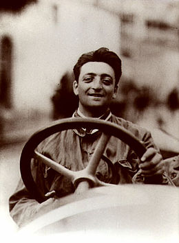

Ferrari was born on 18 February 1898 in Modena, Italy. His birth certificate had recorded his birth date on 20 February because a heavy snowstorm had prevented his father from reporting the birth at the local registry office. He was the younger of two children to Alfredo and Adalgisa Ferrari (née Bisbini), after his elder sibling Alfredo Junior (Dino). Alfredo Senior was the son of grocer from Carpi and started a workshop fabricating metal parts at the family home.Enzo grew up with little formal education. At the age of 10 he witnessed Felice Nazzaro's win at the 1908 Circuit di Bologna, an event that inspired him to become a racing driver.During World War I he was assigned to the third Alpine Artillery division of the Italian Army. His father Alfredo, as well as his older brother, Alfredo Jr., died in 1916 as a result of a widespread Italian flu outbreak. Ferrari became severely sick himself in the 1918 flu pandemic and was consequently discharged from Italian service.
Following the family's carpentry business collapse, Ferrari started searching for a job in the car industry. He unsuccessfully volunteered his services to FIAT in Turin, eventually settling for a job as test-driver for C.M.N. (Costruzioni Meccaniche Nazionali), a Milan-based car manufacturer which redesigned used truck bodies into small passenger cars. He was later promoted to race car driver and made his competitive debut in the 1919 Parma-Poggio di Berceto hillclimb race, where he finished fourth in the three-litre category at the wheel of a 2.3-litre 4-cylinder C.M.N. On November 23 of the same year, he took part in the Targa Florio but had to retire after his car's fuel tank developed a leak.
The prancing horse emblem was created when Italian fighter pilot Francesco Baracca was shot down during World War I. Baracca gave Enzo Ferrari a necklace with the prancing horse on it prior to takeoff. Baracca was tragically shot down and killed. In memory of his death, Enzo Ferrari used the prancing horse to create the emblem that would become the world famous Ferrari shield. However the world first saw this emblem on an Alfa Romeo as Ferrari was still tied up with Alfa Romeo. It was not until 1947 that the shield was first seen on a Ferrari. This was the birth of Ferrari.
In 1924 Ferrari won the Coppa Acerbo at Pescara, a success that encouraged Alfa Romeo to offer him a chance to race in much more prestigious competitions. Deeply shocked by the death of Antonio Ascari in 1925, Ferrari turned down the opportunity to focus instead on the management and development of the factory Alfa cars, eventually building up a team of over forty drivers, including Giuseppe Campari and Tazio Nuvolari. Ferrari himself continued racing until 1932, before he left Alfa Romeo to found Scuderia Ferrari.
Alfa Romeo agreed to partner Ferrari's racing team until 1933, when financial constraints forced them to withdraw their support – a decision subsequently retracted thanks to the intervention of Pirelli. Despite the quality of the Scuderia drivers, the team struggled to compete with Auto Union and Mercedes. Although the German manufacturers dominated the era, Ferrari's team achieved a notable victory in 1935 when Tazio Nuvolari beat Rudolf Caracciola and Bernd Rosemeyer on their home turf at the German Grand Prix.
In 1937 Alfa Romeo decided to regain full control of its racing division, retaining Ferrari as Sporting Director. Unhappy with the arrangement, Ferrari left and founded Auto-Avio Costruzioni, a company supplying parts to other racing teams. Although a contract clause restricted him from racing or designing cars for four years, Ferrari managed to manufacture two cars for the 1940 Mille Miglia, driven by Alberto Ascari and Lotario Rangoni. With the outbreak of World War II in 1943, Ferrari's factory was forced to undertake war production for Mussolini's fascist government. Following Allied bombing of the factory, Ferrari relocated from Modena to Maranello. At the end of the conflict, Ferrari decided to start making cars bearing his name, and founded Ferrari S.p.A. in 1947.
The team's open-wheel debut took place in Turin in 1948 and the first win came later in the year in Lago di Garda. The first major victory came at the 1949 24 Hours of Le Mans, with a Ferrari 166M driven by Luigi Chinetti and (Baron Selsdon of Scotland) Peter Mitchell-Thomson. In 1950 Ferrari enrolled in the newly-born Formula 1 World Championship and is the only team to remain present since its introduction. Ferrari won his first Grand Prix with José Froilán González at Silverstone in 1951. The first championship came in 1952, with Alberto Ascari, a task that was repeated one year later. In 1953 Ferrari made his only attempt at the Indianapolis 500 Miles. In order to finance his racing endeavours in Formula One as well as in other events such as the Mille Miglia and Le Mans, the company started selling sports cars.
Ferrari's decision to continue racing in the Mille Miglia brought the company new victories and greatly increased public recognition. However, increasing speeds, poor roads, and nonexistent crowd protection eventually spelled disaster for both the race and Ferrari. During the 1957 Mille Miglia, near the town of Guidizzolo, a 4.0-litre Ferrari 335S driven by Alfonso de Portago was traveling at 250 km/h when it blew a tyre and crashed into the roadside crowd, killing de Portago, his co-driver and nine spectators, five of whom were children. In response, Enzo Ferrari and Englebert, the tyre manufacturer, were charged with manslaughter in a lengthy criminal prosecution that was finally dismissed in 1961.
Many of Ferrari's greatest victories came at Le Mans (9 victories, including six in a row 1960–65) and in Formula One during the 1950s and 1960s, with the successes of Juan Manuel Fangio (1956), Mike Hawthorn (1958), Phil Hill (1961) and John Surtees (1964).
By the end of the 1960s, increasing financial difficulties as well as the problem of racing in many categories and having to meet new safety and clean air emissions requirement for road car production and development, caused Enzo Ferrari to start looking for a business partner. In 1969 Ferrari sold 50% of his company to FIAT, with the caveat that he would remain 100% in control of the racing activities and that FIAT would pay sizable subsidy till his death for use of his Maranello and Modena production plants. Ferrari had previously offered Ford the opportunity to buy the firm in 1963 for US$18 million but, late in negotiations, Ferrari withdrew once he realised that he would not have been able to retain independent control of the company racing program. Ferrari became joint-stock and Fiat took a small share in 1965 and then in 1969 they increased their holding to 50% of the company. (In 1988 Fiat's holding rose to 90%).
Following the agreement with FIAT, Ferrari stepped down as managing director of the road car division in 1971. In 1974 Ferrari appointed Luca Cordero di Montezemolo as Sporting Director/Formula One Team manager. (Montezemolo eventually assumed the presidency of Ferrari in 1992, a post he held until September 2014). Clay Regazzoni was deputy champion in 1974, while Niki Lauda won the championship in 1975 and 1977. After those successes and another title for Jody Scheckter in 1979, the company's Formula One championship hopes fell into the doldrums.
In 1981 Ferrari attempted to revive his team's fortunes by switching to turbo engines. In 1982, the second turbo-powered Ferrari, the 126C2, showed great promise. However, Gilles Villeneuve was killed in May, and team mate Didier Pironi had his career cut short in a violent end over end flip on the misty back straight at Hockenheim in August after hitting the Renault of Alain Prost. Pironi was leading the driver's championship at the time; he would lose the lead as he sat out the remaining races. The Scuderia went on to win the Constructors Championship in at the end of the season and in 1983, but the team would not see championship glory again until Ferrari's death in 1988. The final race win for the team he saw was when Gerhard Berger and Michele Alboreto scored a 1-2 finish at the final round of the 1987 season in Australia.